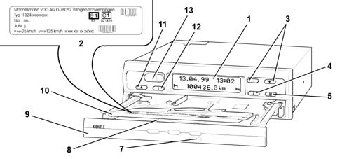
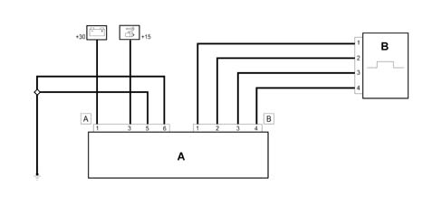
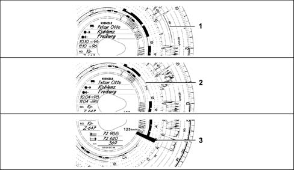
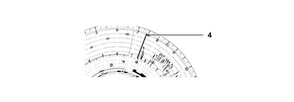
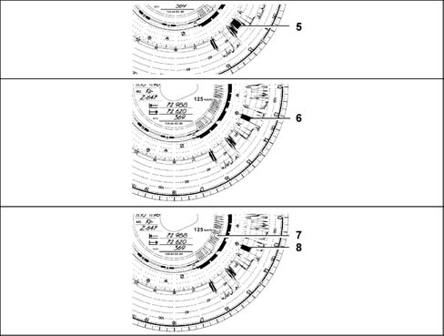

5560CA CHECK TACHOGRAPH ERROR MESSAGES
- Path
- Test > 55 ELECTRICAL EQUIPMENT > 5560 INSTRUMENTS > 5560C OTHER INSTRUMENTS > 5560CA CHECK TACHOGRAPH ERROR MESSAGES
- Kind
- test / check procedure
- Applies to
- engines: 2.0 16V; all production periods
- Interactive page
- https://sloeber94.github.io/elrnDB-fDct/en/#/244000583
Applies to: engines: 2.0 16V; all production periods
The vehicle owner is obliged to check the tachograph at intervals and have its operation checked at least once every two years, e.g. when the vehicle undergoes a technical service.
Any operation that involves modification and/or replacement of system parts must therefore be carried out by personnel who are authorised to test the system.
After each check, ensure the plate is changed and contains the required information.


Messages
The tachograph continually monitors system operation and automatically indicates any faults that may occur in the controls or in one of the components. The tachograph display shows an exclamation mark beside the mileometer and, according to the type of error, displays a time indication or the colon between the figures stops flashing.
The messages and indications may be displayed immediately after closing the cassette or whenever they appear on the display.
To display the error message code:
The function may be called up only with the car at a standstill! Select the "Error Memory" menu by giving the key marked "M" two short presses.
The other active errors may be displayed using the + or - keys. When the screen displays:
- la data (giorno. mese. ultime due cifre dell'anno),
- l'ora di inizio dell'errore,
- una icona con il simbolo più (+) ad indicare se sono presenti altri errori,
- il codice errore.
To exit the "Error Memory" simply press the "M" button for longer than two seconds or do not press any key for 20 seconds.
Faults in the recording and writing system

Some error codes with associated fault descriptions are given below.
9061: Defective operation (1) of vehicle speed graphic recorder.
9062: Error in the multiple graphic recorder (MFS) Defective operation (2)
9063: Faullt in graphic recorder lift system (SAS) (3)
Update of disc carrier adjustment.
Open the cassette and remove both discs, then re-close the cassette. The tachograph automatically updates the disc holder times, the error code and times stop flashing.
Open the cassette again and insert new discs if necessary. The tachograph is ready to operate again.
The message disappers automatically only after the cause has been eliminated, e.g. in the case of an error by the driver/user.
If the error is continuously repeated, replace the tachograph ensuring standards and certifications are observed.
Adjusting the tachograph power cut-out

Some error codes with associated fault descriptions are given below.
A400: If power has been restored, the device displays a thick line (4) on the tachograph disc shortly after start-up (first sensor pulse). no service error is present, the driver 1 tachograph disc is therefore present and the cassette is closed.
Power cut
When power is restored, the device traces out a line (4) on the tachograph disc.
If the error is continuously repeated, replace the tachograph ensuring standards and certifications are observed.
Break in communication between the tachograph and speedometer pulse generator,

Some error codes with associated fault descriptions are given below.
A423: No input/output data signal - As soon as the vehicle is stationary, the marking (5) appears. The recording to the vehicle speed graph is resumed when the vehicle is in motion.
A822: No signal in real time: - The marking (6) appears immediately after the fault appears and remains until the cause is eliminated. The time set is continuously adjusted (from data signals). The last time setting is recorded.
A423: No I/O data signal and no real time signal. The marking (8) appears immediately after the fault has occurred. A radial line (7) appears in the panel to adjusting the route. The last time set is recorded. These error markings are recorded until the cause of the error has been removed.
Marking (6) appears immediately after the fault arises and continues until the cause is eliminated or after vehicle motion has stopped.